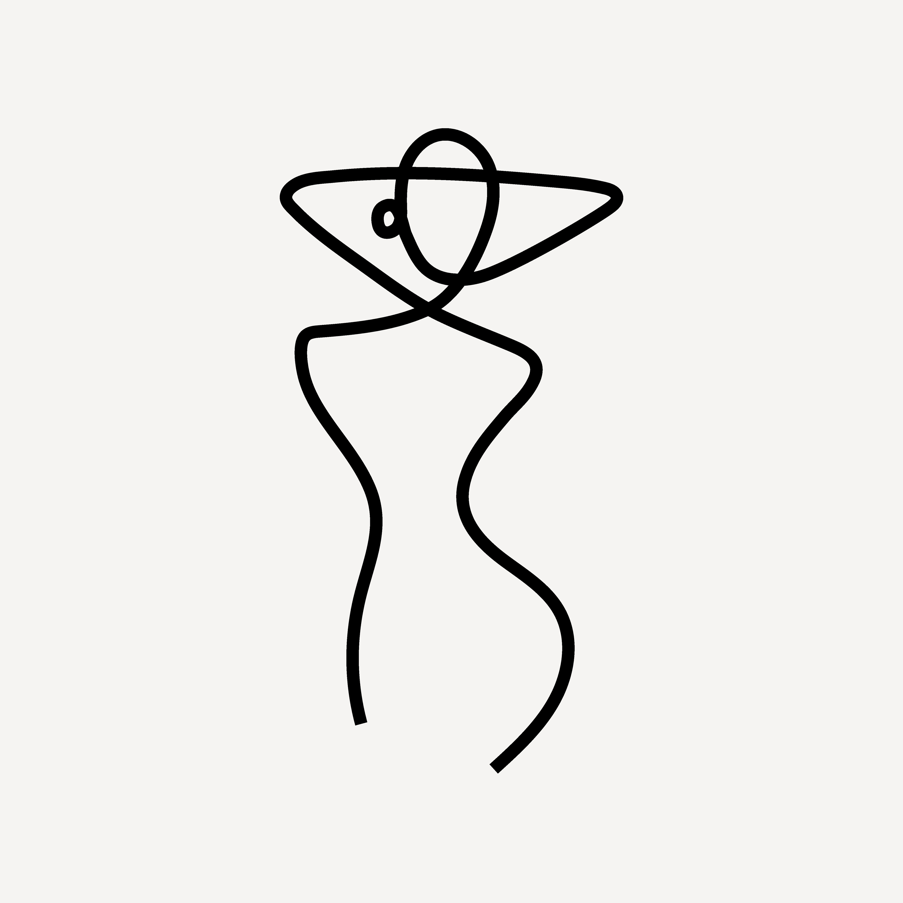

<!--header qui sera inclus dans toutes les pages avec un include-->

<header>
  <!--en tete-->
  <div class="itemLogo">
      <a href="index.php">
        
      </a>
    
  </div>
  <!--navigation-->
  <nav class="itemNav">
    <ul style="list-style-type: none">
      <li>
        <a href="index.php" title="accueil">Accueil</a>
      </li>
      <li>
        <a href="maison.php" title="maison">Maisons</a>
      </li>
      <li>
        <a href="collection.php" title="collection">Collections</a>
      </li>
      <li>
        <a href="defile.php" title="defile">Défilés</a>
      </li>
      <li>
        <a href="photo.php" title="photo">Photos</a>
      </li>
    </ul>
  </nav>
  <div class="itemBtnJour">
    <!--bouton mode jour / nuit-->
    <div class="styleJour">
      <button type="button" id="bouton" value="jour">
        passez en mode nuit
      </button>
      <!--lien script JS pour le mode nuit, insertion ici pour qu'il soit afficher dans chaque page-->
      <script src="js/scriptJourNuit.js"></script>
    </div>
  </div>
</header>
